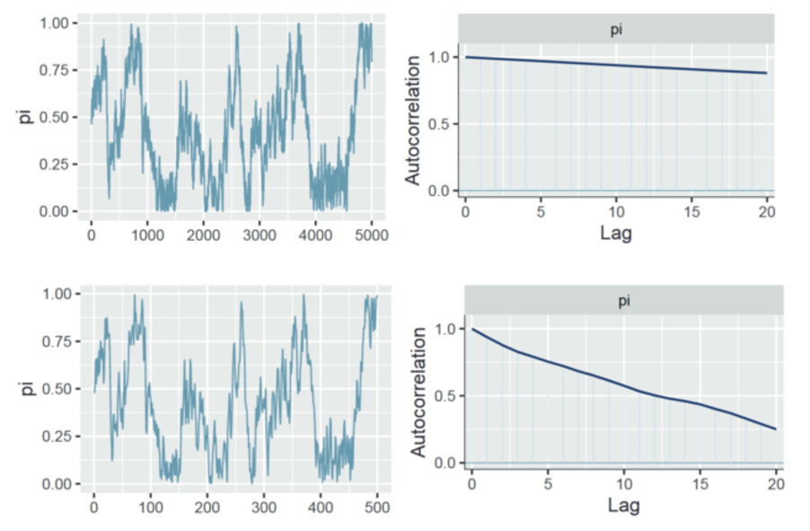
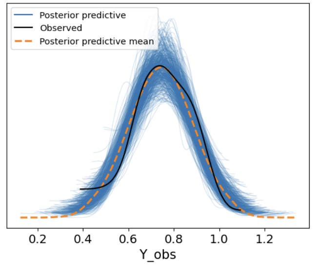
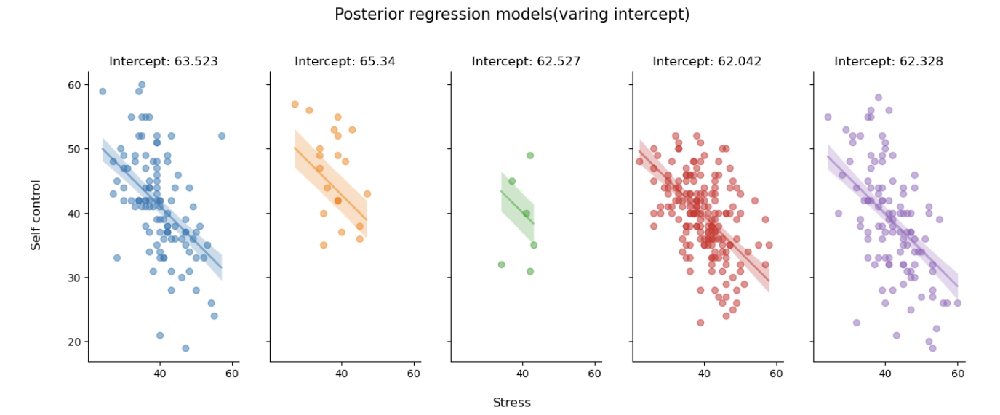

Partial pooling & hierarchical model#
完全池化模型的局限：
完全池化 (complete pooling) 模型假设所有站点下回归模型的截距(\(\beta_0\))和斜率(\(\beta_1\))都相同，没有考虑到不同站点下回归模型的截距(\(\beta_0\))和斜率(\(\beta_1\))都可能发生变化的情况。
而在上节课的学习中，我们知道部分池化 (partial pooling) 模型可以解决这一问题。
🤔 问题在于：如何将部分池化方法应用于回归模型？

\(j\)来表示站点，\(j \in \{ 1,2,...,5\}\)
\(i\)来表示站点内部的每一个数据，\(i \in \{1,2,...,n_i\}\)
每一个被试的数据可以表示为\(Y_{ij}\)，表示站点\(j\)内的第\(i\)个被试的自我控制分数观测值
接下来将会介绍3种不同情况下的部分池化模型，以考虑回归模型的截距和斜率如何随着站点进行变化：
Model1: Hierarchical model with varying intercepts（变化截距模型）#
相较于没有自变量的分层模型，构建包含自变量的分层模型的关键在于区分 参数(\(\beta\)) 和 分层(layer) 的关系。
prior
likelihood
Layer 1: Variability within Site
1.自我控制与压力之间的关系在被试内有什么不同
使用\(i\)表示每个站点内的第\(i\)个被试的自我控制分数观测值
对于每一个被试而言，其自我控制分数服从以\(\mu_{ij}\)为均值，\(\sigma_y\)为标准差的正态分布
而\(\mu_{ij}\)由参数\(\beta_{0j},\beta_1\)决定
其中，\(\beta_{0,j}\)在组与组之间不同(group-specific)
\(\beta_1和\sigma_y\)则是相同的(global)
Layer 2: Variability between Site
2.自我控制与压力之间的线性关系在站点间有什么不同
自我控制与压力之间的线性关系由截距和斜率两方面构成
Model1假设，在不同站点之间，截距是变化的
假设截距的基线为\(\beta_0\)，不同站点间的组间差异为\(\sigma_0\)，则每个站点的截距可以表示为：
Global priors
3.最后，全局参数也需要设置先验，包括\(\beta_0,\beta_1,\sigma_0\)
模型定义与采样
这里将上述两种定义方式均转换为pymc代码，并比较两种定义方式下MCMC采样结果的差异
首先，设定总体的参数\(\beta_0,\beta_1\)
由于\(\beta_{0j}\)在不同站点间不同，因此设定总体参数\(\sigma_0\)并假设每个站点\(\beta_{0j}\sim N(\beta_0,\sigma_0)\)
在另一种定义方式下，将\(\beta_{0j}\)视为\(\beta_0与b_{0j}\)的组合
之后，通过线性公式生成\(\mu=\beta_{0j}+\beta_1*x\)
最后，个体层面的数据\(y服从N(\mu,\sigma_y)\)，其中\(\sigma_y\)为组内变异
# 定义函数来构建和采样模型
def run_var_inter_model():
#定义数据坐标，包括站点和观测索引
coords = {"site": df_first5["Site"].unique(),
"obs_id": df_first5.obs_id}
with pm.Model(coords=coords) as var_inter_model:
#定义全局参数
beta_0 = pm.Normal("beta_0", mu=40, sigma=20)
sigma_beta0 = pm.Exponential("sigma_beta0", 1)
beta_1 = pm.Normal("beta_1", mu=0, sigma=5)
sigma_y = pm.Exponential("sigma_y", 1)
#传入自变量、获得观测值对应的站点映射
x = pm.MutableData("x", df_first5.stress, dims="obs_id")
site = pm.MutableData("site", df_first5.site_idx, dims="obs_id")
#模型定义
beta_0j = pm.Normal("beta_0j", mu=beta_0, sigma=sigma_beta0, dims="site")
#线性关系
mu = pm.Deterministic("mu", beta_0j[site]+beta_1*x, dims="obs_id")
# 定义 likelihood
likelihood = pm.Normal("y_est", mu=mu, sigma=sigma_y, observed=df_first5.scontrol, dims="obs_id")
var_inter_trace = pm.sample(draws=5000, # 使用mcmc方法进行采样，draws为采样次数
tune=1000, # tune为调整采样策略的次数，可以决定这些结果是否要被保留
chains=4, # 链数
discard_tuned_samples= True, # tune的结果将在采样结束后被丢弃
random_seed=84735,
target_accept=0.99)
return var_inter_model, var_inter_trace
# 注意，以下代码可能运行5分钟左右
var_inter_model, var_inter_trace = run_var_inter_model()
pm.model_to_graphviz(var_inter_model)

先验预测检查
var_inter_prior = pm.sample_prior_predictive(samples=500,
model=var_inter_model,
random_seed=84735)
# 定义绘制先验预测回归线的函数，其逻辑与绘制后验预测回归线相同
def plot_prior(prior,group_index):
# 定义画布，根据站点数量定义画布的列数
fig, ax = plt.subplots(1,len(df_first5["Site"].unique()),
sharex=True,
sharey=True,
figsize=(20,5))
# 根据站点数来分别绘图
#需要的数据有原始数据中的自变量，每一个因变量的先验预测均值
# 这些数据都储存在先验预测采样结果中，也就是这里所用的prior
for i, group in enumerate(df_first5["Site"].unique()):
#绘制回归线
ax[i].plot(prior.constant_data["x"].sel(obs_id = group_index[f"{group}"]),
prior.prior["mu"].sel(obs_id = group_index[f"{group}"]).stack(sample=("chain","draw")),
c='gray',
alpha=0.5)
ax[i].set_title(f"{group}")
fig.text(0.5, 0, 'Stress', ha='center', va='center', fontsize=12)
# 生成纵坐标名称
fig.text(0.08, 0.5, 'Self control', ha='center', va='center', rotation='vertical', fontsize=12)
# 生成标题
plt.suptitle("Prior regression models", fontsize=15, y=1)
sns.despine()
plot_prior(prior=var_inter_prior,
group_index=first5_index)

可以看出，先验预测范围是非常广的，能够覆盖所有可能性。当研究者缺乏明确的直觉或经验时，这种比较广的先验也是可用的。
MCMC采样&后验参数估计
# ~ 和filter_vars="like" 表示在显示结果时去除掉包含这些字符的变量
var_inter_para = az.summary(var_inter_trace,
var_names=["~mu","~_sigma","~_offset","~sigma_"],
filter_vars="like")
var_inter_para

可以看到5条回归线的斜率都是一致的，\(\beta_1=-0.56\)
总体层面的截距\(\beta_0=63.11\)
但不同站点的截距\(\beta_{0j}[...]\)有所不同
az.plot_forest(var_inter_trace,
var_names=["~mu", "~sigma", "~offset", "~beta_1"],
filter_vars="like",
combined = True)

从图中可以看出，不同站点的截距不仅在均值上存在差异，变异性也有所不同。
后验预测回归线
#定义函数，绘制不同站点下的后验预测回归线
def plot_partial_regression(data, trace, group_index):
# 定义画布，根据站点数量定义画布的列数
fig, ax = plt.subplots(1,len(data["Site"].unique()),
sharex=True,
sharey=True,
figsize=(15,5))
# 根据站点数来分别绘图
# 需要的数据有原始数据，每一个因变量的后验预测均值
# 这些数据都储存在后验参数采样结果中，也就是这里所用的trace
for i, group in enumerate(data["Site"].unique()):
#绘制真实数据的散点图
x = trace.constant_data.x.sel(obs_id = group_index[f"{group}"])
y = trace.observed_data.y_est.sel(obs_id = group_index[f"{group}"])
mu = trace.posterior.mu.sel(obs_id = group_index[f"{group}"])
ax[i].scatter(x, y,
color=f"C{i}",
alpha=0.5)
#绘制回归线
ax[i].plot(x, mu.stack(sample=("chain","draw")).mean(dim="sample"),
color=f"C{i}",
alpha=0.5)
ax[i].set_title(f"Intercept: {var_inter_para.loc[f'beta_0j[{group}]']['mean']}", fontsize=12)
#绘制预测值95%HDI
az.plot_hdi(
x, mu,
hdi_prob=0.95,
fill_kwargs={"alpha": 0.25, "linewidth": 0},
color=f"C{i}",
ax=ax[i])
# 生成横坐标名称
fig.text(0.5, 0, 'Stress', ha='center', va='center', fontsize=12)
# 生成纵坐标名称
fig.text(0.08, 0.5, 'Self control', ha='center', va='center', rotation='vertical', fontsize=12)
# 生成标题
plt.suptitle("Posterior regression models(varing intercept)", fontsize=15, y=1.05)
sns.despine()
plot_partial_regression(data=df_first5,
trace=var_inter_trace,
group_index=first5_index)

5条回归线的斜率基本相同，但将每条回归线延伸开来，与y轴相交的截距会有所不同。
组间方差与组内方差
在这个模型定义中，组间方差来自beta_0_offset，组内方差来自sigma_y
结果发现：组间变异 (0.028) 小于组内变异 (0.971)，表明组内相关性低。
def calculate_var_odds(trace):
# 提取组间和组内变异
para_sum = az.summary(trace,
var_names=["mu","sigma_"],
filter_vars="like",
kind="stats"
)
individual_par = para_sum.filter(like='mu', axis=0)["mean"]
# 计算组间方差
individual_par - individual_par.mean()
normal_par = (individual_par - individual_par.mean()) / individual_par.std()
tmp_df = df_first5.copy()
tmp_df["mu"] = normal_par.values
group_par = tmp_df.groupby("site_idx").mu.mean()
between_sd = (group_par**2).sum()
# 计算组内方差
within_sd = para_sum.loc['sigma_y','mean']**2
# 计算变异占比
var = between_sd + within_sd
print("被组间方差所解释的部分：", between_sd/var)
print("被组内方差所解释的部分：", within_sd/var)
print("组内相关：",between_sd/var)
calculate_var_odds(var_inter_trace)
被组间方差所解释的部分： 0.028661409760697212 被组内方差所解释的部分： 0.9713385902393027 组内相关： 0.028661409760697212